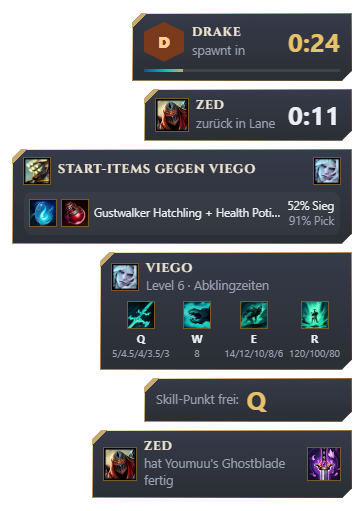
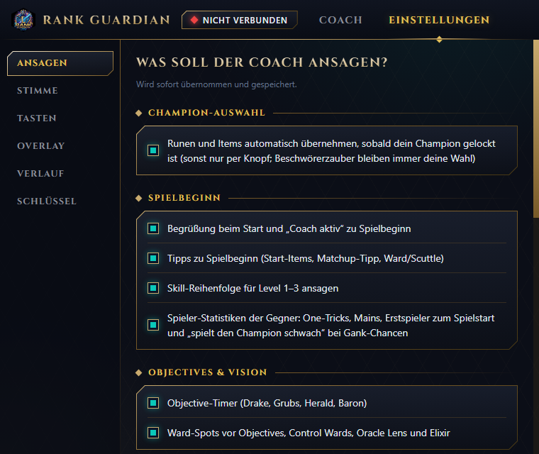

Your voice coach for every game
Rank Guardian talks to you while you play: objective timings, item and rune suggestions for your matchup, and reminders when it is a good moment to act. After the game it walks you through what went well and what cost you the game, so you climb by understanding your own play.

What it does
Spoken tips in game
Objective spawns (Dragon, Grubs, Herald, Baron), ward spots before objectives, your skill order for levels 1–3, and item suggestions that adapt to what the enemy team builds.
Ask by voice
Hold a key and ask, e.g. "What should I build next?" or "What does Viego's ultimate do?". The coach answers in a natural voice based on your current game.
Champion select help
Rune and item suggestions for your champion and lane matchup. You choose whether they are imported into your own rune page and item set automatically or on button press.
Post-game review
After the game: where and when you died, how your gold and CS developed, and which objectives you could have taken. One short list of things to try next game.
Your trends
Deaths per game, CS per minute and rank progress across your recent games, so you see whether a habit is improving.
You decide
Every type of announcement and every overlay card can be switched off. Volume, voice, speed and push-to-talk key are adjustable.

Built to stay out of your way
- Runs next to the game as a normal Windows app; it never injects into or modifies the game client.
- Announcements are short and spoken only when they matter; push-to-talk pauses them while you ask a question.
- The overlay draws without the graphics card by default, so it does not cost you frames.
- German and English game terms; item names stay in English the way players say them.
How Rank Guardian uses the Riot Games API
Rank Guardian only requests data about the player using the app, and only after a game has ended. The request volume is very low: a handful of calls per finished game.
| API | Endpoint | Used for |
|---|---|---|
| ACCOUNT-V1 | /riot/account/v1/accounts/by-riot-id | Looks up the player's own Riot ID once to get the PUUID. |
| MATCH-V5 | /lol/match/v5/matches/by-puuid/{puuid}/ids | Finds the player's most recent finished games. |
| MATCH-V5 | /lol/match/v5/matches/{matchId}/lol/match/v5/matches/{matchId}/timeline | Post-game review of the player's own game: deaths with time and place, gold and CS over time, objectives, items. |
| LEAGUE-V4 | /lol/league/v4/entries/by-puuid/{puuid} | Shows the player's own rank and LP progress. |
During a game, Rank Guardian reads only Riot's official local interfaces on the player's own PC: the Live Client Data API and the League Client API (for the player's own champion select, rune page and item set).
Privacy
- All game data, reviews and chat history are stored locally on your PC, next to the app. Nothing is uploaded to a Rank Guardian server, sold or published.
- Voice questions are sent to the AI service you configure (for spoken answers) and are not used by Rank Guardian for anything else.
- You can delete everything at any time by deleting the app folder.
- Rank Guardian is free. There are no ads and no paid features.
Fair play
Rank Guardian follows Riot's policies for third-party tools. It does not show enemy ability or summoner spell cooldown timers, does not reveal information hidden by fog of war, does not de-anonymize champion select, does not read game memory and does not automate any input. All in-game information comes from data the game itself provides to the player.